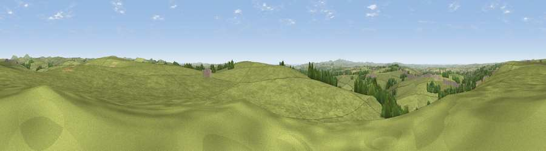

St. Bellarmin's Tor
#10900 in England · top 23% of its area beats it · near CardinhamThe view, rendered

A 360° render of this exact spot computed from the terrain model, tree cover and land cover — summer colours, afternoon light, calibrated against photographs of famous viewpoints. Real trees, hedges and buildings will differ in detail.
The panorama
Grey silhouette: terrain skyline in each direction (720 bearings, Earth curvature and refraction included). Dashed green: skyline with trees (+15 m) and buildings (+8 m) as obstacles. Blue strip: how far the ground is visible on each bearing.
Where the view opens
Wedge length = distance to the farthest visible ground on that bearing (vegetation-aware). Rings at 10, 25 and 50 km.
What fills the view
91% grassland · 5% woodland · 2% cropland ·
Angular shares of the visible panorama (visual magnitude), not map area. Landscape diversity 0.17 (0–1 Shannon).
Key numbers
More beautiful places nearby
The staircase of upgrades: each row has a higher view potential than everything closer. Driving times are estimates from straight-line distance, calibrated against real road routing — check an actual route before setting out.
| Place | Direction | Drive | Score |
|---|---|---|---|
| Viewpoint near Blisland | NNW · 1 km | ~3 min | 65.6 |
| Viewpoint near Cardinham | SSE · 1 km | ~4 min | 71.1 |
| Viewpoint near St Neot | ENE · 7 km | ~14 min | 72.3 |
| Berry Down | ESE · 7 km | ~14 min | 73.5 |
| Brown Willy | NNE · 9 km | ~19 min | 77.3 |
| Viewpoint near Port Isaac | NW · 14 km | ~25 min | 79.7 |
| Viewpoint near Stenalees | SW · 19 km | ~32 min | 88.0 |
| Viewpoint near Crackington Haven | N · 23 km | ~38 min | 88.1 |
50.50802, -4.63844 · source: osm peak · position refined by local search. Computed location — check access rights before visiting.